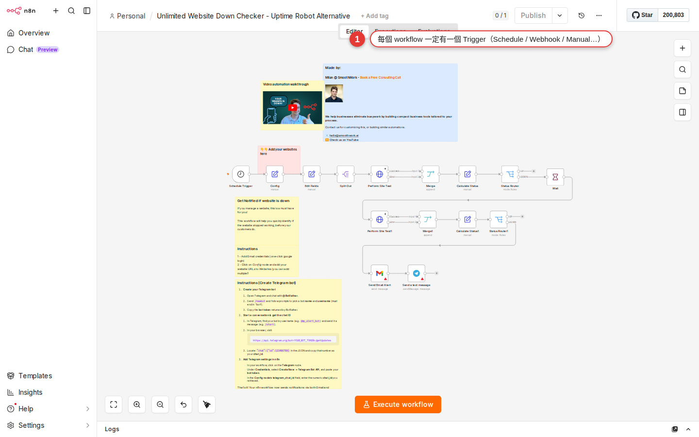

Three triggers: Manual / Schedule / Event
A workflow only runs if something at the front tells n8n when to start. This chapter lays out the three main trigger types in one pass: Manual (it runs when you press the button), Schedule (it runs by itself when the time comes), and Event (it runs when something happens outside). It also settles the timezone trap that catches most people using Schedule, so you do not spend half a day waiting for a schedule that never fires.
Why the three trigger types matter
Up to Chapter 8 you have built a workflow of "Schedule Trigger + Google Calendar + Slack", and from Chapter 9 you know how data moves from node to node. But stop and think for a second: when does a workflow actually start running?
- Only when you press the Execute Workflow button?
- Or automatically at 8:00 every day?
- Or the moment a particular Gmail arrives, or a particular URL is called?
Those three answers map onto n8n's three families of Trigger node — every workflow has to pick one at the front (with no Trigger node, n8n has no idea when it is supposed to do the work for you). Picking the wrong one costs you directly: you wanted a daily run but dropped in a Manual Trigger, and "why did nothing happen?" only surfaces a week later. This chapter lays all three types out in front of you so you pick right the first time.
All three trigger families at a glance
The "On app event" and "On a schedule" groups in the n8n nodes panel hold dozens of Trigger nodes, but underneath they are variations on three types:
| Type | What decides that the workflow runs | Typical nodes | When to pick it |
|---|---|---|---|
| Manual (by hand) | You press the button yourself | Manual Trigger (When clicking "Execute workflow") | While you are building or testing, and one-off jobs that should only run when a person clicks |
| Schedule (on a schedule) | It runs when the time comes (Cron) | Schedule Trigger | Fixed jobs that run at a fixed time daily / hourly / weekly (daily reports, backups, reconciliation) |
| Event (an event) | It runs when something happens outside | Webhook, Gmail Trigger, Slack Trigger, Sheets Trigger, GitHub Trigger, RSS Feed Trigger… | When you need to react to an outside event right away (mail arrives, a form is filled in, code is pushed, a Sheet is edited) |
The three types can coexist in one workflow — section 6 below shows how a single workflow carries Schedule and Manual at once, so it runs by itself during the day and you can still click it manually when you need to.
Manual Trigger: your best friend while building
Manual Trigger is the simplest of all the triggers — it has no parameters at all, it is one node sitting there. One sentence covers how to use it: press Execute Workflow at the top right and the workflow runs once from the start.
When to use it
- While building or testing: you have wired the workflow up and want to see the result now, and Manual is the fastest way. Click, look at the result, change a node, click again.
- One-off jobs: for example "export the full customer list for this month" — for a batch job you run once, setting up a Schedule is more trouble than it is worth; one click on Manual is enough.
- Flows that need a human gate: for example "the report only goes out after the manager has checked it". Where a person has to make the call, Manual Trigger turns pressing the button into an approval step.
When not to use it
- The workflow is live and has to run around the clock: Manual is a disaster here, because it never runs unless you press it. Once a workflow is live, the main trigger should become Schedule or Webhook.
- An outside system has to call in (for example a LINE bot receiving a message): Manual cannot do this at all, you need Webhook / an Event Trigger.
Schedule Trigger: runs on a clock, like cron
Schedule Trigger is the trigger automation uses most — you set a time rule and n8n runs the workflow for you when that time comes around. Typical uses: push the calendar to Slack at 8:00 in the morning, sync a database once an hour, send the weekly report at 9:00 every Monday.

The ways you can set Trigger Interval
| Trigger Interval | What it means | What you fill in |
|---|---|---|
| Seconds | Runs every X seconds | Seconds Between Triggers (for example 30 seconds) |
| Minutes | Runs every X minutes | Minutes Between Triggers (for example 15 minutes) |
| Hours | Runs every X hours; you can say which minute of the hour it runs on | Hours Between Triggers, Trigger at Minute |
| Days | Runs every X days; you can say at which hour and minute | Days Between Triggers, Trigger at Hour, Trigger at Minute |
| Weeks | Runs every X weeks; you can say which days of the week | Weeks Between Triggers, Trigger on Weekdays (tick Mon/Tue/…), Trigger at Hour/Minute |
| Months | Runs every X months; you can say which day of the month | Months Between Triggers, Trigger at Day of Month, Trigger at Hour/Minute |
| Custom (Cron) | Write a more complex rule as a Cron expression | Expression (for example 0 8 * * 1-5) |
The two setups you will use most
Run at 8:00 every morning: set Trigger Interval to Days, Days Between Triggers to 1, Trigger at Hour to 8, Trigger at Minute to 0.
Run at 9:30 Monday to Friday: set Trigger Interval to Weeks, Weeks Between Triggers to 1, tick Mon/Tue/Wed/Thu/Fri under Trigger on Weekdays, Trigger at Hour 9, Trigger at Minute 30. Or go straight to Custom (Cron) and enter 0 30 9 * * 1-5 (six fields: second minute hour day month weekday), one line and you are done.
second minute hour day month weekday. A 0 8 * * * (five fields) copied from somewhere else means something different once you paste it into n8n, and may error out outright. Remember to add the seconds field: "every day at 8:00" should be written 0 0 8 * * *.How to set the timezone for a schedule
There are two levels of timezone setting, and one overrides the other. Note: the English edition uses Europe/London only as an example; replace it with the IANA timezone for your location. Knowing which level you are editing is what saves you half a day of confusion:
| Level | What it affects | How to change it |
|---|---|---|
| Workflow level (set separately on each workflow) | Affects only how this workflow's Schedule Trigger reads the time | Open the workflow → Settings at the top right (or Ctrl+,) → set Timezone to Europe/London |
| Instance level (global to the whole n8n instance) | Every workflow on the instance that has no workflow-level timezone of its own falls back to this | The environment variable GENERIC_TIMEZONE=Europe/London; set Node.js's TZ=Europe/London to match as well, because if the two disagree, values such as new Date() can differ from the schedule clock (this means changing server settings — if that is not your job, ask IT) |
Precedence: workflow level > instance level > the documented America/New_York default. Which means:
-
Check the instance timezone instead of assuming it
Ask the administrator whether
GENERIC_TIMEZONEis set to an appropriate value such asEurope/London. Build a test workflow, run it every minute, and check whether the times on the Executions page match the intended local time. If they do, the instance default is suitable; an explicit workflow timezone is still safer when portability matters. -
If they are wrong, set the workflow level
Open the workflow's three-dot menu at the top right → Settings → there is a Timezone dropdown in the middle; pick your IANA timezone, for example
Europe/London. Save when you are done. -
Check every workflow that has a Schedule Trigger
Workflow-level settings are independent of each other: even with workflow A set, a new workflow B has to be set again (if the instance level is UTC).
Event triggers: they run when something happens outside
Event triggers are the family that feels most like magic: you are not the one acting, the outside world is. Someone fills in a form, mail arrives, a Sheet is edited, someone pushes to GitHub — when those things happen, n8n runs on its own. The Event Trigger nodes you will use most:
| Node | What sets it off | Typical use |
|---|---|---|
| Webhook | An HTTP call hits the URL you handed out | A LINE bot receiving a message, a Typeform submission, a Home Assistant automation calling in, a third-party system posting back a callback |
| Gmail Trigger | New mail arrives in Gmail (you can filter by label / sender) | Pull the data out of a customer email and open a ticket the moment it lands; file invoice emails into Drive automatically |
| Slack Trigger | A new Slack message / an @-mention of you / a new channel / an emoji reaction | @ the bot and it looks something up; auto-reply whenever a keyword shows up |
| Google Sheets Trigger | A row is added to a Sheet, or a row changes | Send a welcome email as soon as someone signs up on the form; tell sales when the quote sheet changes |
| Airtable Trigger | A new or changed Airtable record | Open a Slack channel when the CRM gets a new customer; send a closing email when a task turns Done |
| GitHub Trigger | push / PR opened / issue created / release | Deploy automatically when a PR is merged; tell the team when an issue is filed |
| RSS Feed Trigger | A new item in an RSS feed | Post to Slack when the blog publishes something; email a digest when a news site updates |
| Chat Trigger | Someone types a message into n8n's chat interface | Building an internal chatbot or AI Agent assistant (used from ch22 onwards) |
Webhook is the king of event triggers: it takes anything that can call in over HTTP — that is what all of Chapter 22 is about, so for now it is enough to know it exists.
Trigger nodes vs poll nodes — why Gmail is always a beat behind
Underneath, event triggers split into two mechanisms, and that is what decides how fast they react:
| Mechanism | How it works | Response speed | Which nodes work this way |
|---|---|---|---|
| Push (the Webhook kind) | When something happens on the other system, it calls your URL over HTTP | Immediate (a few hundred milliseconds) | Webhook, GitHub Trigger, Slack Trigger (parts of it go through the events API) |
| Poll (the polling kind) | n8n asks the other API on a timer whether there is anything new | Depends on the interval you set, usually 1 minute to 1 hour | Gmail Trigger, Google Sheets Trigger, Airtable Trigger, RSS Feed Trigger |
The difference matters: Gmail Trigger does not run the moment mail arrives. Every X minutes n8n asks the Gmail API whether anything new has come in since it last asked. With a poll interval of 5 minutes, new mail waits up to 5 minutes before the workflow starts. To go faster, drop the poll interval to 1 minute (the shortest the Community edition allows), but you make more API calls and may run into the other side's rate limit.
Can one workflow have several triggers? Yes
n8n lets you put several Trigger nodes on one workflow. They sit side by side (not in series) — whichever one fires, the same downstream workflow runs. It is a useful pattern:
Pattern 1: Schedule + Manual (the most common)
The daily report goes out automatically at 8:00, but you suddenly want to send it again right now — add a Manual Trigger beside the Schedule Trigger, and pressing Execute Workflow runs it immediately. On the canvas it looks like this:
[Schedule Trigger] ─┐
├──▶ [Downstream node A] ─▶ [Downstream node B]
[Manual Trigger] ─┘Pattern 2: Webhook + Schedule (a safety net)
Normally the webhook reacts in real time, but in case a webhook is ever missed, add a Schedule that sweeps the database once an hour for anything left unprocessed and runs it again.
Pattern 3: several event triggers converging
"A message from Gmail or from Slack should open the same kind of ticket" — put a Gmail Trigger and a Slack Trigger side by side, share one set of downstream logic, and data from both sides takes the same path.
Hands-on: switch an existing workflow from Manual to Schedule
Say the workflow you built in Chapter 8 started with a Manual Trigger for testing (fair enough, Manual is the right choice while testing), and now that the testing is over you want it to run by itself at 9:30 every morning:
-
Open that workflow
Go in through the Workflows list on the left. Right now it starts with a Manual Trigger node, with your existing downstream nodes to its right.
-
Delete the Manual Trigger node
Right-click the Manual Trigger node → Delete (or select it and press Delete / Backspace). The connection to the downstream nodes breaks and the first downstream node is left "floating" on the canvas. Do not panic.
-
Add a Schedule Trigger
Click + at the top left of the canvas (or press Tab on an empty spot) to open the nodes panel → pick On a schedule → Schedule Trigger. It drops onto the canvas.
-
Set the time on the Schedule Trigger
Open the node panel: set Trigger Interval to
Days, Days Between Triggers1, Trigger at Hour9, Trigger at Minute30. Look at the Next execution shown under the node and check that the timezone in parentheses isEurope/London(or your intended IANA timezone) (if it is not, set it as described in the previous section). -
Connect the Schedule Trigger to your existing downstream nodes
Drag from the connector dot on the right of the Schedule Trigger to the dot on the left of the first downstream node. A successful connection shows as a solid line.
-
Save, then switch on the Active toggle at the top right
Press Ctrl+S to save, then drag the Active toggle at the top right to green. This is the step everyone forgets — a Schedule with Active OFF never runs by itself, and crying about it tomorrow will not help.
-
Verify: press Execute Workflow once for a manual run
Once it is Active you can still press Execute Workflow for a manual run, which tests whether the Schedule Trigger path makes it all the way through. If that run succeeds, tomorrow at 9:30 it will fire on its own.
-
Check the Executions page the next day
In Executions on the left (or the Executions tab inside that workflow) you will see the record of the automatic run at 9:30 the next day. A record means the schedule is alive; no record means go to the next section and troubleshoot.
Common trigger pitfalls
The trigger did not fire, it fired at the wrong time, or it fired but nothing downstream ran — work through the five below and you can usually get yourself out of it.
| Symptom | Likely cause | How to fix it |
|---|---|---|
| The Schedule time came and went with no run | The Active toggle at the top right is OFF | Open the workflow and drag Active to green. This is the number-one gotcha. |
| The Schedule runs at the wrong local time | No workflow Timezone is set, so it falls back to the instance setting | Workflow → Settings → choose your IANA timezone, for example Europe/London, save, then inspect the next execution time |
| The Webhook Trigger URL was called but nothing ran | What you have is the Test URL; a Test URL is only alive while you have pressed "Listen for test event", or for the moment right after a single run while the workflow is not Active, and it dies when you close the canvas | Use the Production URL (switch between them in the Webhook node panel) and make sure the workflow is Active. Chapter 22 has the details. |
| Gmail clearly received the mail but the trigger did not fire | (1) The poll interval is long and has not come round yet, (2) a filter on the Gmail side archived the mail or sent it to spam, (3) the OAuth scope you authorized does not cover that label | Set Poll Times to Every Minute first to rule out the interval; then check the filters on the Gmail side; finally reconnect the OAuth credential |
| The time is right and Active is on, but the workflow still does not run | (1) You navigated away without saving the workflow, (2) the Trigger node was right-click Disabled (it looks gray), (3) the workflow was copied from another one and the trigger was never set up again | Save once; right-click the Trigger node to see whether it is Disabled and pick Enable; reopen the Trigger node and save again so the settings are written |
| Pressing Execute Workflow on a Manual Trigger does nothing | There are several Trigger nodes on the canvas and the Manual Trigger is not connected to anything downstream | Check the connection: the dot on the right of the Manual Trigger has to reach the dot on the left of the downstream node |
| A Schedule running every minute is too often and you want to stop it | You forgot that the workflow's Active is ON | Just switch the Active toggle off; there is no need to delete the Trigger node |
FAQ
What is the shortest interval a Schedule Trigger can run at?
Can I set the timezone for every workflow at once instead of changing them one by one?
GENERIC_TIMEZONE=Europe/London. That is an instance-level setting, so only an admin (or someone with IT access) can change it. Do not assume the instance matches your location; ask the administrator or build a one-minute test workflow and inspect its execution times. For the full list of environment variables see Appendix A · Settings reference and the n8n timezone documentation.Can one Trigger node serve several workflows at the same time?
Does a Webhook Trigger's URL change every time?
Does firing a trigger use up execution quota?
Is Schedule Trigger the same thing as the Cron in a scheduling system?
Custom (Cron) in n8n's Schedule Trigger has six fields: second minute hour day month weekday — an extra "second" at the front. Common examples (remember the seconds field): 0 0 8 * * * (8:00 every day), 0 0 8 * * 1-5 (8:00 Monday to Friday), 0 */15 * * * * (every 15 minutes), 0 0 9 1 * * (9:00 on the 1st of every month). When you copy a five-field expression from crontab.guru, remember to add a 0 at the front, or the meaning shifts completely or it errors out.